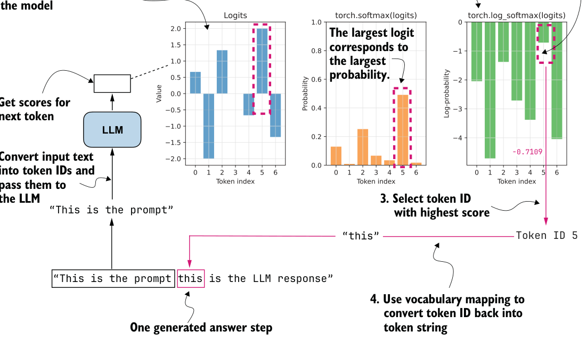
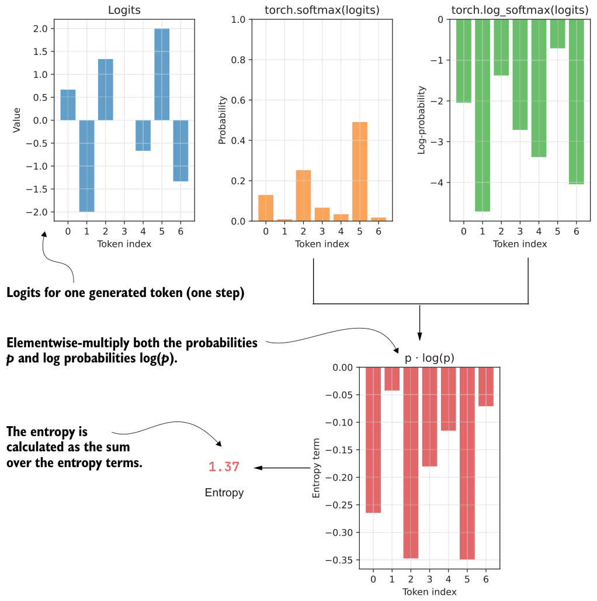

7.3.2Entropy tracking
Before we track and analyze the advantage statistics introduced in the previous section, let’s introduce another metric, entropy.
Entropy measures how uncertain the model is when generating the next token. High entropy means the probabilities are spread across many possible tokens, which encourages exploration. Low entropy means most of the probability is concentrated on a single token, which makes the model increasingly deterministic. Low entropy can also signal training collapse, where the model stops exploring and keeps producing the same outputs.
Before computing entropy, let’s briefly revisit how we calculated log-probability values (logprobs) in chapter 5, as summarized in figure 7.7.
torch.log(torch.softmax(logits) or
torch.log_softmax(logits) directly.
In figure 7.7, instead of using real logits generated by prompting the base model, we use example logits assuming a vocabulary size of 7 (otherwise, with the original 151,000 token vocabulary, it would be impossible to visualize this concept in a plot):
logits = torch.tensor([
0.6667, -2.0000, 1.3333, -0.0000, -0.6667, 2.0000, -1.3333
])The following code implements the calculation shown in figure 7.7:
logprobs = torch.log_softmax(logits, dim=-1)
print("All token logprobs:", logprobs)
selected_token = torch.argmax(logprobs)
selected = logprobs[selected_token]
print("Selected token ID:", selected_token)
print("Selected token logprob:", selected)These are the outputs:
All token logprobs: tensor([-2.0442, -4.7109, -1.3776,
-2.7109, -3.3776, -0.7109, -4.0442])
Selected token ID: tensor(5)
Selected token logprob: tensor(-0.7109)In short, torch.log_softmax() computes all logprobs, torch.argmax() returns the index (token ID) of the largest logprob (here, 5), and logprobs[selected_token] returns the logprob value of that token ID (–0.7109).
Entropy is closely related to the logprobs. We compute it by multiplying each probability by its logprobs and then summing these products, as illustrated in figure 7.8. In principle, we could also track simpler quantities than entropy during training, such as the sum of probabilities or logprobs, but entropy is a widely used and easy-to-interpret measure of uncertainty in a probability distribution.
Figure 7.8 shows an entropy of 1.37. As a rough rule of thumb,
- Very low entropy (≈ 0–0.5) means that one token dominates the distribution. The model is highly confident and behaves almost deterministically.
- Moderate entropy (≈ 1–2) means the probabilities are shared across a reasonably small set of tokens, which is typical during stable training.
- High entropy (approaching [log × vocabulary size]; here, log(7) = 1.9459) means the probabilities are spread across many tokens. In this case, the model is highly uncertain and behaves almost randomly.
In code, we can calculate entropy as follows.
probs = torch.softmax(logits, dim=-1)
logprobs = torch.log_softmax(logits, dim=-1)entropy = torch.sum(-(probs * logprobs))
print("Probs:", probs)
print("Entropy:", entropy)1.37
These are the resulting outputs:
Probs: tensor([0.1295, 0.0090, 0.2522, 0.0665, 0.0341, 0.4912, 0.0175])
Entropy: tensor(1.3700)As mentioned earlier, entropy quantifies how spread out the model’s probability distribution is over the vocabulary. In this specific example, the entropy of 1.37 indicates a moderate level of uncertainty. One token (with probability 0.4912) clearly dominates, but other tokens still have meaningful probabilities.
In listing 7.4, we compute the probs and logprobs separately using torch.softmax() and torch.log_softmax(), respectively. The torch.log_softmax() function combines two separate function calls: torch.log(torch.softmax()). The torch.exp() function is the inverse of torch.log(). This means that if we only had the logprobs, we could still calculate the probs by applying torch.exp(logprobs), as follows:
print("Probs:", torch.exp(logprobs))This outputs the same probs values as before:
Probs: tensor([0.1295, 0.0090, 0.2522, 0.0665, 0.0341, 0.4912, 0.0175])Building on this idea, we can extend the sequence_logprob function from the previous chapter to a sequence_logprob_and_entropy function that returns both the logprobs and the entropy.
def sequence_logprob_and_entropy(model, token_ids, prompt_len):
logits = model(token_ids.unsqueeze(0)).squeeze(0).float()
logprobs = torch.log_softmax(logits, dim=-1)
targets = token_ids[1:]
selected = logprobs[:-1].gather(1, targets.unsqueeze(-1)).squeeze(-1)
selected_answer_logprobs = selected[prompt_len - 1:]
logp_all_steps = torch.sum(selected_answer_logprobs)
all_answer_logprobs = logprobs[:-1][prompt_len - 1:]
if all_answer_logprobs.numel() == 0:
entropy_all_steps = logp_all_steps.new_tensor(0.0)
else:
all_answer_probs = torch.exp(all_answer_logprobs)
plogp = all_answer_probs * all_answer_logprobs
step_entropy = -torch.sum(plogp, dim=-1)
entropy_all_steps = torch.mean(step_entropy)
return logp_all_steps, entropy_all_stepsTo compute and track entropy during training, we can use this sequence_logprob_and_ entropy function inside compute_grpo_loss in place of the sequence_logprob function.
Note that figure 7.8 illustrated the entropy computation for a single token in the
rollout (step_entropy), whereas sequence_logprob_and_entropy returns the average entropy across all answer tokens; that is, entropy_all_steps = torch.mean(step_ entropy). For the answer "this is the LLM response", the step entropy refers to the entropy at a single token position (for instance, at "this"), while the average entropy is the mean across all answer tokens in "this is the LLM response".
With this modified sequence_logprob_and_entropy function, we can now use entropy as a diagnostic for the model’s generation behavior during training. By tracking the average entropy of the generated answer tokens, we can monitor whether the model behaves randomly (high entropy), remains exploratory (moderate entropy), or becomes overly confident and deterministic (low entropy).
In particular, we expect entropy to gradually decrease as the model becomes more confident. A sudden collapse to very low entropy can be a warning sign of unstable training.